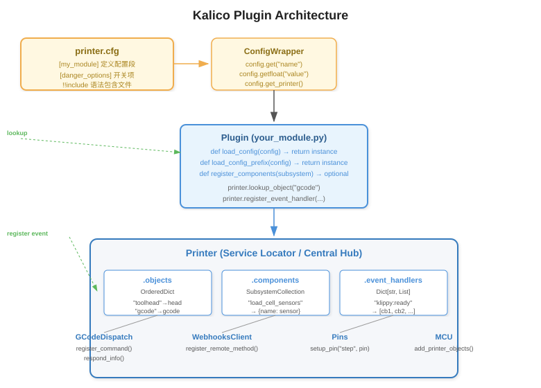
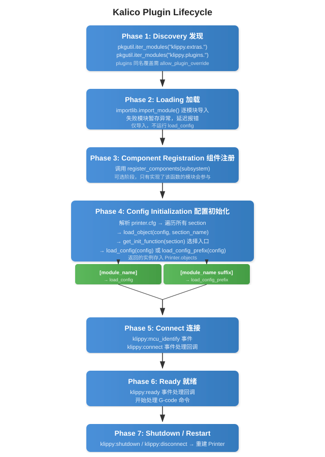

Plugin Development Guide¶
This document describes how to develop, install, and manage plugins for Kalico. Plugins allow you to extend Kalico's functionality without modifying the core source tree, ensuring your customizations survive updates.
Table of Contents¶
- Overview
- Quick Start
- Plugin Directory Structure
- Architecture
- Lifecycle
- Plugin API Reference
- Subsystem Component Registration
- Service Locator Pattern
- Lifecycle Events
- G-code Command Registration
- Webhooks / Remote API
- Configuration
- Best Practices
- Debugging & Introspection
- Migrating from
extras/toplugins/ - Using the Plugin Installer
- Complete Example
- Troubleshooting
Overview¶
Kalico's plugin system follows a convention-over-configuration design.
Instead of XML manifests, JSON metadata, or plugin registries, a plugin is simply
a Python module (a .py file or a sub-package) placed in klippy/plugins/.
The presence of the file is its registration.
Core concepts:
| Concept | Description |
|---|---|
| extras | Built-in modules shipped with Kalico, located in klippy/extras/ |
| plugins | User/external modules, located in klippy/plugins/ (git-untracked) |
| PrinterModule | Wrapper around a discovered module; handles lazy loading, error tracking |
| Config section | A [name] or [name suffix] entry in printer.cfg that triggers your module's instantiation |
| Printer.objects | The central OrderedDict where all instantiated module instances live |
Key Design Decisions¶
- No enable/disable list. A plugin is loaded only if a corresponding
[section]appears inprinter.cfg. Without it, the module is imported but never instantiated (marked as "unused" inLIST_MODULES). - The
plugins/directory is git-untracked. It does not exist in the upstream Kalico tree. Drop files here freely — no dirty git tree. - Plugin overrides are gated. If a plugin has the same name as a built-in
extra, Kalico raises an error unless
allow_plugin_override: Trueis set in[danger_options]. This prevents accidental shadowing.
Quick Start¶
Create the file klippy/plugins/my_tool.py:
class MyTool:
def __init__(self, config):
self.printer = config.get_printer()
self.name = config.get_name()
gcode = self.printer.lookup_object("gcode")
gcode.register_command("MY_COMMAND", self.cmd_MY_COMMAND)
self.printer.register_event_handler("klippy:ready", self._on_ready)
def _on_ready(self):
pass # Initialization that requires a connected printer
def cmd_MY_COMMAND(self, gcmd):
gcmd.respond_info("Hello from my_tool!")
def load_config(config):
return MyTool(config)
Add to printer.cfg:
[my_tool]
Restart Kalico. Run MY_COMMAND from the console — you should see "Hello from my_tool!".
Plugin Directory Structure¶
klippy/
├── extras/ # Built-in modules (part of Kalico core)
│ ├── __init__.py
│ ├── respond.py
│ └── ...
├── plugins/ # User plugins (git-untracked)
│ ├── __init__.py # Package marker (always present)
│ ├── my_tool.py # Single-file plugin
│ ├── my_complex_plugin/ # Sub-package plugin
│ │ ├── __init__.py # Contains load_config / load_config_prefix
│ │ ├── helpers.py
│ │ └── sensor.py
│ └── ...
Single-file vs Sub-package¶
| Style | When to use | Example |
|---|---|---|
Single .py file |
Simple plugin, no helper files | my_tool.py |
Sub-package with __init__.py |
Plugin with multiple modules, helpers, or data files | my_complex_plugin/ |
Both styles are auto-discovered. The module name is the filename (without .py)
or the directory name.
Import Rules¶
Your plugin lives inside the klippy.plugins package. When you need to import
from built-in extras, use the full klippy.extras.* path:
from klippy.extras.gcode_macro import Template # correct
from klippy.extras.servo import Servo # correct
Relative imports within your own sub-package work as usual:
from .helpers import my_helper # within your sub-package
Architecture¶
The following diagram shows how the key components interact:

- printer.cfg provides
[section]definitions and option values. - ConfigWrapper wraps each section, providing typed access (
get(),getfloat(),getint(), etc.). - Your Plugin implements
load_config(config)orload_config_prefix(config), receiving aConfigWrapper. - The Printer acts as the Service Locator — your plugin pulls dependencies by name:
printer.lookup_object("gcode")— get a registered serviceprinter.load_object(config, "heaters")— lazily load another moduleprinter.register_event_handler("klippy:ready", cb)— subscribe to eventsprinter.lookup_components("load_cell_sensors")— query a subsystem registry
Lifecycle¶

Phase Details¶
Phase 1 – Discovery (printer.py:_load_modules)
All *.py files in klippy/extras/ and klippy/plugins/ are discovered via
pkgutil.iter_modules(). Each becomes a PrinterModule stored in
printer.printer_modules. If a plugin has the same name as an existing extra,
Kalico raises an error unless allow_plugin_override: True is set.
Phase 2 – Loading (printer.py:_load_modules)
Each PrinterModule.load() calls importlib.import_module(module_info.name).
Exceptions during import are caught and stored — the error is raised later,
only if the module is actually used. This means a broken plugin that is never
referenced in printer.cfg will not crash the startup.
Phase 3 – Component Registration (printer.py:_register_subsystem_components)
If a module defines register_components(subsystem), it is called to populate
named subsystem registries. This is optional and used by plugins that provide
driver-like components (e.g., sensor types for the load cell subsystem).
Phase 4 – Config Initialization (printer.py:_read_config)
For every [section] in printer.cfg, printer.load_object(config, section)
finds the matching PrinterModule and calls its load_config(config) or
load_config_prefix(config). The returned instance is stored in printer.objects.
The config section must read ALL its parameters during this phase; unread
parameters are flagged as errors.
Phase 5 – Connect (printer.py:_connect)
The "klippy:connect" event fires after all modules are instantiated.
Use this phase for inter-module lookups, config validation, and hardware handshakes.
Phase 6 – Ready (printer.py:_connect)
The "klippy:ready" event fires after all connect handlers finish.
The printer is now ready to process G-code commands. Do not raise errors here.
Phase 7 – Shutdown / Restart (printer.py:run)
On RESTART or FIRMWARE_RESTART, the Printer and Reactor are destroyed
and recreated from scratch. All modules are re-imported and re-initialized.
There is no hot-plug mechanism — a restart is required.
Plugin API Reference¶
Every plugin module must expose at least one of the following module-level functions:
load_config(config) → object¶
def load_config(config):
return MyPlugin(config)
Called when printer.cfg contains [my_plugin] (exact match, no suffix).
Receives a ConfigWrapper for that section. Must return the constructed object.
load_config_prefix(config) → object¶
def load_config_prefix(config):
return MyPlugin(config)
Called for sections like [my_plugin instance1], [my_plugin instance2], etc.
(prefixed match, with a space separating the module name and suffix).
Enables multiple instances of the same module.
register_components(subsystem) (optional)¶
def register_components(subsystem):
subsystem.register_component("my_subsystem", "my_component", MyDriver)
Called during startup to register named components into a subsystem registry. See Subsystem Component Registration for details.
ConfigWrapper API¶
value = config.get("option_name", default=None)
flag = config.getboolean("bool_option", False)
num = config.getfloat("float_option", 1.0, minval=0.0, maxval=10.0)
count = config.getint("int_option", 5, minval=0)
choice = config.getchoice("mode", {"fast": 1, "slow": 2}, "fast")
name = config.get_name() # Full section name, e.g. "my_plugin instance1"
printer = config.get_printer() # The Printer service locator
section = config.getsection("subsection") # Get nested section
Subsystem Component Registration¶
Some plugins are not "standalone modules" but instead provide components
to a larger subsystem. For example, each ADC sensor driver registers itself
into the "load_cell_sensors" subsystem, and the main [load_cell] config
section uses config.getchoice("sensor_type", sensors) to let the user choose.
Provider Side (registering into a subsystem)¶
# In your plugin's register_components():
def register_components(subsystem):
subsystem.register_component(
"my_subsystem", # subsystem name (string key)
"my_driver_v1", # component name (shown to user in config)
MyDriverClass # the component (class, function, or value)
)
See klippy/extras/load_cell/__init__.py:14 for a real example.
Consumer Side (looking up from a subsystem)¶
sensors = printer.lookup_components("my_subsystem") # → {"my_driver_v1": MyDriverClass, ...}
chosen = config.getchoice("driver_type", sensors) # user picks from choices
instance = chosen(config) # instantiate the chosen one
Service Locator Pattern¶
Kalico uses a Service Locator (pull-based) pattern rather than Dependency
Injection (push-based). Your plugin is responsible for pulling its dependencies
from the Printer instance.
Key Methods on Printer¶
# Get a reference to the Printer instance
printer = config.get_printer()
# Look up a previously registered object by its config section name
gcode = printer.lookup_object("gcode")
toolhead = printer.lookup_object("toolhead")
# Lazily load another module (returns cached instance on subsequent calls)
heaters = printer.load_object(config, "heaters")
# Query a subsystem component registry
components = printer.lookup_components("load_cell_sensors")
# Get the reactor (for timers, file I/O, sleep)
reactor = printer.get_reactor()
# Get startup arguments
args = printer.get_start_args()
# Check if printer is in shutdown state
if printer.is_shutdown():
return
Why Pull-based?¶
- The initialization order is non-trivial — not all modules exist when your
plugin is constructed. Defer lookups to event handlers (e.g.,
"klippy:connect") to avoid missing dependencies. - The
gcodeandpinsobjects are always available early. - Use
printer.load_object(config, "module_name")to force-load a dependency.
Lifecycle Events¶
Register event handlers to hook into Kalico's lifecycle:
printer.register_event_handler("event_name", callback_function)
Standard Events¶
| Event | Stage | Common Use |
|---|---|---|
"klippy:connect" |
After all modules instantiated | Cross-module lookups, config validation, hardware check |
"klippy:ready" |
Printer fully operational | Begin auto-routines, enable features |
"klippy:disconnect" |
During restart/shutdown | Close files, sockets, cleanup resources |
"klippy:shutdown" |
Error/fault shutdown | Safely stop hardware, log state |
"klippy:firmware_restart" |
Before firmware restart | Save state before MCU reset |
"klippy:mcu_identify" |
MCU identification phase | Register MCU-dependent objects |
"gcode:command_error" |
G-code parsing error | Custom error recovery |
"gcode:unknown_command" |
Unrecognized G-code | Implement custom command resolution |
Event Handler Guidelines¶
def _handle_connect(self):
# SAFE: look up other objects
self.toolhead = self.printer.lookup_object("toolhead")
def _handle_ready(self):
# SAFE: start operations, send commands
# Do NOT raise errors here
def _handle_shutdown(self):
try:
self.motor.stop()
except:
pass # Suppress errors during shutdown
G-code Command Registration¶
Register custom G-code commands in your module's __init__:
class MyPlugin:
def __init__(self, config):
self.gcode = self.printer.lookup_object("gcode")
self.gcode.register_command("MY_CMD", self.cmd_MY_CMD, "Description for help")
def cmd_MY_CMD(self, gcmd):
# Read parameters
speed = gcmd.get_float("S", 0.0)
value = gcmd.get("PARAM", "default")
# Respond to the console
gcmd.respond_info(f"Got S={speed}, PARAM={value}")
# Raise errors on invalid input
if speed < 0:
raise gcmd.error("Speed must be positive")
gcmd Object API¶
gcmd.get("NAME", default=None) # String parameter
gcmd.get_float("S", default=0., minval=0) # Float parameter
gcmd.get_int("N", default=0, minval=0) # Integer parameter
gcmd.respond_info("message") # Standard response
gcmd.respond_raw("raw text") # Raw output
gcmd.error("error message") # Raise an error (aborts command)
Webhooks / Remote API¶
Expose JSON-RPC endpoints for external clients (Mainsail, Fluidd, etc.):
class MyPlugin:
def __init__(self, config):
webhooks = self.printer.lookup_object("webhooks")
webhooks.register_endpoint("my_plugin/get_status", self._handle_api)
def _handle_api(self, web_request):
return {
"temperature": 42.0,
"status": "ok",
}
get_status() for Automatic Status Exposure¶
Define get_status() on your printer object to automatically expose its
state via the API server and Jinja templates:
class MyPlugin:
def get_status(self):
return {
"value": self.current_value,
"active": self.is_active,
}
Status values must be: int, float, str, bool, list, dict, tuple,
or None. Lists and dicts must be treated as immutable — return a new object
if contents change.
Configuration¶
Basic Section¶
[my_tool]
option1: some_value
option2: 3.14
option3: True
Multiple Instances via load_config_prefix¶
[my_tool extruder]
name: hotend_left
max_temp: 300
[my_tool bed]
name: heated_bed
max_temp: 120
Your load_config_prefix() receives a separate ConfigWrapper for each instance.
Plugin Override¶
If your plugin shares a name with a built-in extra (e.g., you create
klippy/plugins/respond.py), you must enable overrides:
[danger_options]
allow_plugin_override: True
Without this, Kalico raises an error: "Module 'respond' found in both extras and plugins!".
Include Other Config Files¶
Use !!include in your plugin's config to pull in larger configurations:
[my_tool]
!!include path/to/my_tool_defaults.cfg
custom_option: my_value
Best Practices¶
-
No global variables. Store all state in your printer object instance.
RESTARTrecreates thePrinter, and globals will leak state. -
Assign all member variables in
__init__. Avoid dynamically creating attributes — useself.xyz = Nonein the constructor. -
Use floating-point constants for floats. Prefer
self.speed = 1.overself.speed = 1, andself.speed = 2. * xoverself.speed = 2 * x. This avoids subtle Python type conversion bugs. -
Read all config options during construction. Parameters not read during
__init__are flagged as typos and cause config errors. -
Don't access
_-prefixed members of other modules. These are private implementation details that may change without notice. -
Defer heavy work to event handlers. Use
"klippy:connect"for lookups of modules that may not exist yet, and"klippy:ready"for operations that need a fully initialized printer. -
Close files/sockets on disconnect. Register for
"klippy:disconnect":python self.printer.register_event_handler("klippy:disconnect", self._cleanup) -
Suppress errors in shutdown handlers. During emergency shutdown, logging an error and swallowing the exception is preferable to blocking the shutdown sequence.
Debugging & Introspection¶
LIST_MODULES Command¶
Check the status of all loaded modules:
LIST_MODULES DETAIL=1
Output example:
Loaded modules:
my_tool (plugins, loaded)
Path: klippy/plugins/my_tool.py
Loaded: 2025-05-14 12:00:00
Used: yes
Fields explained:
- source:
"plugins"or"extras"— where the module came from - loaded: Whether the module was imported successfully (any import errors are reported here)
- used: Whether any
printer.cfgsection references this module - error: Exception details if loading failed (only shown if
loaded: False)
Logging¶
import logging
logging.info("Informational message")
logging.warning("Warning message")
logging.exception("Exception traceback") # In except blocks
Log output goes to Kalico's klippy.log (or stderr if no log file is configured).
Testing¶
Use the reference test plugin at test/klippy_testing_plugin.py as a template.
Run tests with scripts/test_klippy.py.
Migrating from extras/ to plugins/¶
If you have an existing module in klippy/extras/ that you want to move to
klippy/plugins/ to keep your Kalico tree clean:
Automatic Migration¶
Use the plugin installer with a local path:
python scripts/install_plugin.py /path/to/your/local/plugin --name my_plugin
See Using the Plugin Installer for details.
Manual Migration Steps¶
-
Move the file. Copy
klippy/extras/my_module.py→klippy/plugins/my_module.py. -
Check imports. If your module imports from
klippy.extras.*, those imports are already fully qualified and do not need to change. Bothextras/andplugins/modules live under theklippypackage. -
Remove from extras. Delete the original from
klippy/extras/. -
Add config section. Ensure your
printer.cfghas[my_module]. -
Enable override (if applicable). If you're replacing a built-in module of the same name, add
allow_plugin_override: Truein[danger_options]. -
Restart Kalico. Run
RESTARTor restart the Kalico service.
When to Use allow_plugin_override¶
Only when your plugin name matches an existing extra module name. For unique plugin names, no override flag is needed.
Using the Plugin Installer¶
Kalico ships with scripts/install_plugin.py, a tool that automates fetching,
analyzing, and installing plugins from a git repository.
Basic Usage¶
python scripts/install_plugin.py <url> [options]
| Option | Description |
|---|---|
--branch <name> |
Clone a specific git branch (default: default branch) |
--name <name> |
Force the installed module name (default: inferred from repo) |
--force |
Overwrite existing plugin of the same name |
--dry-run |
Analyze and report without installing |
What It Does¶
- Clones the git repository to a temporary directory.
- Scans for plugin files — any
.pyfile containingload_configorload_config_prefix. - Detects the correct installation layout (single-file vs sub-package).
- Uses AST analysis to discover:
- G-code commands: any calls to
gcode.register_command("CMD", ...) - Dependencies: any calls to
printer.lookup_object("name")orprinter.load_object(config, "name")
- G-code commands: any calls to
- Copies the plugin into
klippy/plugins/<module_name>/. - Prints a friendly installation summary.
Example Output¶
Fetching plugin from https://github.com/user/kalico-my-cool-sensor...
[1/4] Cloning repository... done.
[2/4] Scanning for plugin modules...
Found: my_cool_sensor.py (entry: load_config)
[3/4] Analyzing plugin...
G-code commands detected: COOL_CALIBRATE, COOL_REPORT
Dependencies detected: gcode, heaters, toolhead
[4/4] Installing to klippy/plugins/...
klippy/plugins/my_cool_sensor.py installed.
========================================
Plugin installed: my_cool_sensor
========================================
Source: https://github.com/user/kalico-my-cool-sensor
Install path: klippy/plugins/my_cool_sensor.py
Entry point: load_config(config)
Available G-code commands:
COOL_CALIBRATE → calibrate the cool sensor
COOL_REPORT → report current readings
Required config section (add to printer.cfg):
[my_cool_sensor]
sensor_pin: PA0
# see the plugin's README for full options
Dependencies (ensure these exist in your config):
gcode
heaters
toolhead
To activate: send RESTART to Kalico
========================================
Installing from a Local Directory¶
You can also point the installer at a local path to migrate a plugin from extras/:
python scripts/install_plugin.py ./klippy/extras/my_module.py --name my_module
Installing from a GitHub Repository¶
# Default branch
python scripts/install_plugin.py https://github.com/user/kalico-my-plugin
# Specific branch or tag
python scripts/install_plugin.py https://github.com/user/kalico-my-plugin --branch v1.2.0
Complete Example¶
Below is a complete plugin example based on test/klippy_testing_plugin.py.
It registers a custom G-code command ASSERT that evaluates a Jinja2 expression.
# klippy/plugins/assert_plugin.py
#
# Evaluate an expression and raise an error if False.
# Usage: ASSERT TEST="{1 + 1 == 2}"
import ast
from klippy.extras.gcode_macro import Template
class AssertPlugin:
def __init__(self, config):
self.printer = config.get_printer()
gcode = self.printer.lookup_object("gcode")
self.gcode_macro = self.printer.load_object(config, "gcode_macro")
self.printer.register_event_handler(
"gcode:command_error", self._on_command_error
)
self.printer.register_event_handler(
"gcode:unknown_command", self._on_unknown_command
)
gcode.register_command("ASSERT", self.cmd_ASSERT)
def _on_command_error(self):
self.printer.request_exit("error_exit")
self.printer.invoke_shutdown("Exception during testing")
def _on_unknown_command(self, cmd):
self.printer.request_exit("error_exit")
self.printer.invoke_shutdown(
f"Unknown command during test: {cmd}"
)
def cmd_ASSERT(self, gcmd):
expression = gcmd.get("TEST")
try:
template = Template(
self.printer,
self.gcode_macro.env,
"ASSERT:runtime_expression",
expression,
)
except Exception:
raise gcmd.error(f"ASSERT: Failed to parse '{expression}'")
context = self.gcode_macro.create_template_context()
result = template.render(context)
value = ast.literal_eval(result) if result else None
if not value:
raise gcmd.error(f"ASSERT: {expression} == {value}")
def load_config(config):
return AssertPlugin(config)
Configuration in printer.cfg:
[assert_plugin]
Troubleshooting¶
"Module 'xxx' found in both extras and plugins!"¶
Your plugin has the same name as a built-in module. Either:
- Rename your plugin to a unique name, or
- Add
allow_plugin_override: Truein[danger_options]
"Unable to load module 'xxx'"¶
The config has a [xxx] section but no module named xxx was found in either
extras/ or plugins/. Check that:
- The file name matches exactly (e.g.,
my_tool.py→[my_tool]) - The file is in
klippy/plugins/ - There are no Python syntax errors
"Unknown config object 'xxx'"¶
You called printer.lookup_object("xxx") but the module xxx hasn't been
loaded yet. Either:
- Move the lookup to a
"klippy:connect"event handler - Use
printer.load_object(config, "xxx")to force-load it first
"Plugin not showing in LIST_MODULES"¶
- Make sure the file is placed as
klippy/plugins/<name>.py(exact path) - Restart Kalico (a
RESTARTis required — dynamic reloading is not supported) - Check
klippy.logfor Python import errors
"Unused" in LIST_MODULES¶
Your module was loaded but no config section references it. Add [module_name]
to your printer.cfg. Without this, the module is imported but never instantiated.